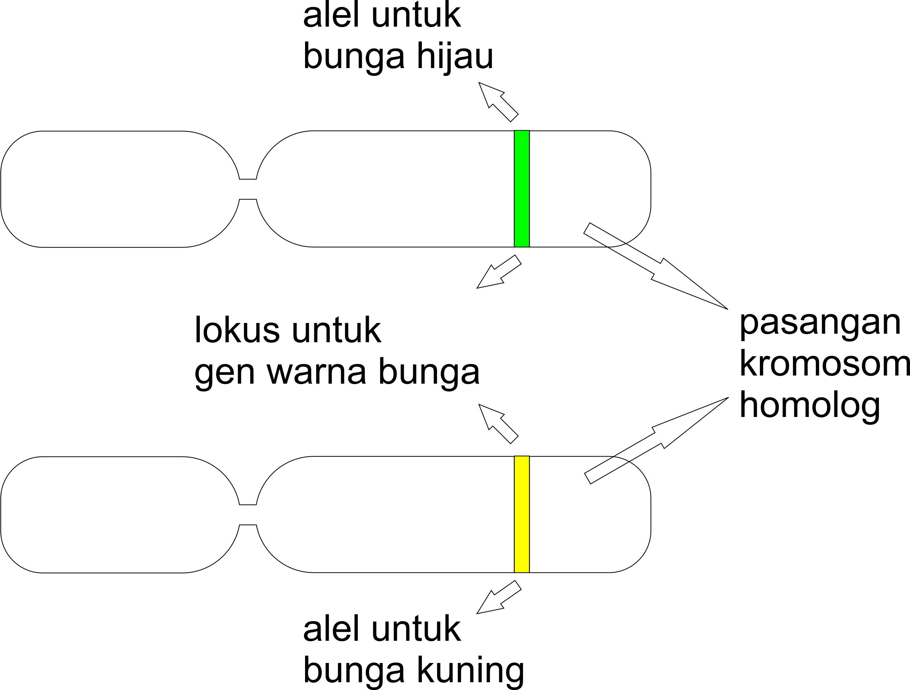
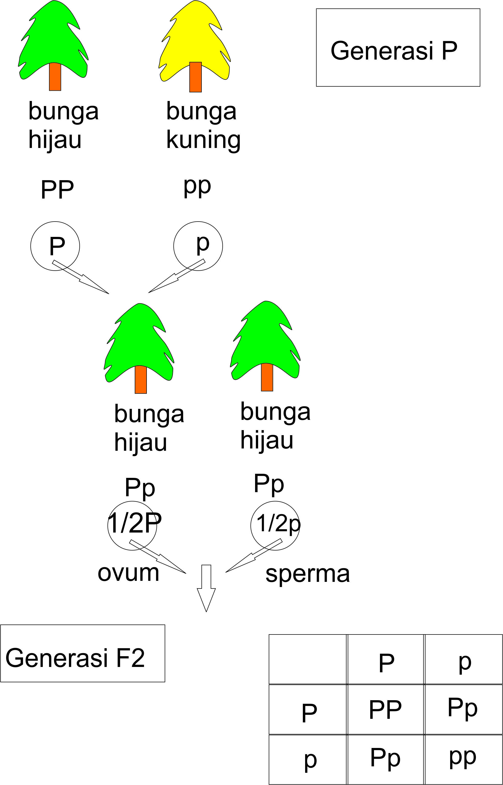

Hukum Segregasi (Hukum Mendel I)
Hukum ini menjelaskan tentang persilangan satu sifat beda.
Contoh dari hukum segregasi ini adalah F1(Filial 1) yang disilangkan adalah tanaman ercis warna bunga ungu dengan warna bunga putih.
Pada percobaan yang dilakukan menghasilkan hasil berbeda yaitu keturunan F1 semuanya berbunga ungu seperti induknya.
Namun pada keturunan F2 warna bunga berwarna putih muncul kembali.
Mendel menggunakan ukuran sampel yang sangat besar dan mencatat secara akurat hasil percobannya adalah 705 tanaman F2 berwarna ungu dan 224 berbunga putih.
Mendel beralasan bahwa faktor yang dapat diturunkan untuk warna bunga putih tidak menghilang pada tanaman F1 tetapi hanya faktor warna bunga ungu sajalah yang mempengaruhi warna bunga pada hibrid tersebut.
Dalam terminologi Mendel warna bunga ungu adalah sifat dominan dan warna bunga putih adalah sifat resesif.
Mendel mengembangkan sebuah hipotesis yang dibagi menjadi empat:
- Versi alternatif gen (alel-alel yang berbeda) menjelaskan terjadinya variasi pada karakter yang diwarisi.
Contoh: Gen untuk warna bunga.
- Untuk setiap karakter, organisme mewarisi dua alel, satu dari masing-masing induk.
Contoh: Pada warna bunga, hibrid tersebut mewarisi alel bunga ungu dari satu induk dan alel bunga putih dari induk yang lain.
- Jika kedua alel berbeda maka salah satunya, alel dominan diekspresikan sepenuhnya, alel satunya alel resesif tidak mempunyai efek yang jelas pada penampakan organisme.
Contoh: Bunga ungu merupakan alel dominan dan alel bunga putih resesif.
- Kedua alel untuk setiap karakter terpisah selama produksi gamet. Jika suatu oranisme mempunyai alel yang identik.
Untuk karakter tertentu yang berarti organisme tersebut adalah jalur murni, maka hal tersebut akan hadir dalam salinan tunggal dalam semua gamet.
Tetapi apabila alelnya berlawanan maka 50% dari gamet mendapat alel dominan dan 50% alel resesif.
Pada Gambar 1 dapat dijelaskan bahwa ada dua kromosom yaitu kromosom berwarna hijau dan kromosom berwarna kuning.
Versi alternatif dari gen adalah alel. Alel berwarna hijau adalah dominan dan alel yang berwarna kuning adalah resesif.
Terdapat dominansi sempurna dimana alel hijau akan menutupi alel kuning pada semua hibrid (F1) sehigga hasil dari F1 menjadi hijau.
Dominansi tak sempurna (incomplete dominance) menghasilkan perpaduan warna kedua alel menjadi kuning melon.
Gambar 2 mengilustrasikan model Mendel untuk penurunan sifat monohibrid. Alel bunga hijau (P) adalah dominan dan alel warena bunga kuning (p) adalah resesif.
Masing-masing tanaman mempunyai dua alel untuk gen yang mengendalikan warna bunga, satu alel diwarisi dari masing-masing induk.
Sebuah tanaman galur murni dari generasi parental yang mempunyai alel yang cocok, bisa PP(parental warna bunga hijau) atau pp(parental warna bunga kuning).
Gamet disimbolkan dengan PP dan pp, masing-masing gamet terbelah menjadi satu alel untuk gen warna bunga.
Gamet-gamet induk (parental) menghasilkan hibrid F1 yang mempunyai alel yang tidak bersesuaian yaitu kombinasi Pp.
Karena alel hijau lebih dominan maka semua alel tersebut mempunyai warna bunga hijau.
Pada saat tanaman hibrid menghasilkan gamet kedua alel akan berpisah, setengah dari gamet mendapat alel P dan setengah dari gamet mendapat alel p.

Gambar 1. Persilangan Kromosom Warna

Gambar 2. Hukum Segregasi Mendel
Karena adanya diminansi dan keresesifan penampakan organisme tidak selalu mengungkapkan komposisi genetiknya.
Oleh sebab itu kita harus membedakan antara penampakan organisme fenotip dan penyusun genetiknya disebut genotip.
Jadi perbandingan antara fenotip dan genotip sebagai berikut:
- Fenotip (tampak diluar atau dapat dilihat mata) : adanya 3 warna bunga hijau dan 1 bunga warna kuning.
Dalam hukum mendel sering dituliskan dengan 3 : 1.
- Genotip (yang tidak tampak oleh mata) :
adanya 3 gen yang terdapat dari persilangan F1 yakni PP : Pp : Pp : pp atau dapat dituliskan dengan 1 : 2 : 2 : 1.
Sumber
Buku Biologi Edisi 5 Jilid 1 Campbell, Reece, Mitchel